BI
Business Intelligence & Analytics
Developing dashboards, performance measures, and reporting processes that turn operational and financial data into practical business decisions.
I connect operational leadership, business intelligence, and healthcare strategy to improve performance, support growth, and make complex organizations easier to manage.
Combining healthcare operations, analytics, and business strategy to improve organizational performance.
Developing dashboards, performance measures, and reporting processes that turn operational and financial data into practical business decisions.
Improving workflows, staffing, capacity, lead management, purchasing, and cross-functional processes across growing healthcare organizations.
Supporting multi-site expansion, clinic launches, revenue performance, customer experience, and sustainable organizational growth.
A snapshot of the scale, focus, and results behind my work.
Initial procedure capacity before operational expansion.
Daily procedure volume supported through scalable operations.
Supporting performance, workflows, vendors, and growth across locations.
Connecting analytics, financial performance, and day-to-day execution.
Examples of how I have used analytics, operational strategy, and process improvement to support healthcare growth and performance.
Healthcare Analytics & Executive Reporting
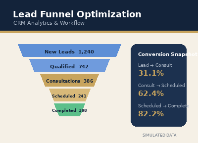
CRM Analytics & Workflow Improvement
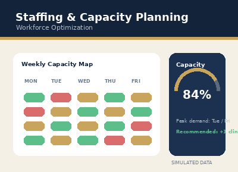
Workforce and Operational Optimization
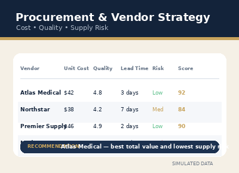
Cost, Quality and Supply Optimization
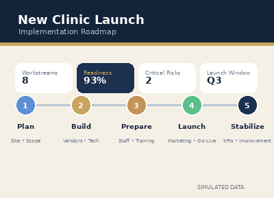
Healthcare Growth and Implementation
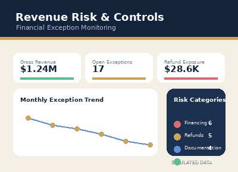
Operational Finance and Exception Monitoring
Building a career at the intersection of healthcare operations, analytics, and organizational growth.
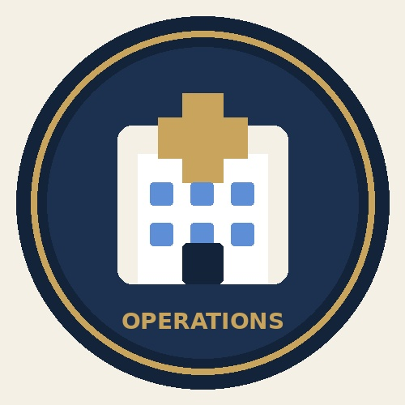
Built hands-on experience leading clinic operations, staffing, purchasing, sales processes, patient financing, reporting, and performance improvement. My work expanded from managing day-to-day operations to supporting strategy and growth across multiple healthcare locations.
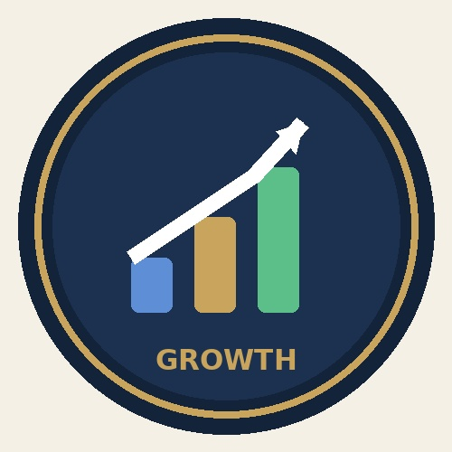
Helped transform a small clinical operation from approximately three procedures per week into a growing multi-site platform completing more than twelve procedures per day. I developed repeatable workflows, performance measures, and operational structures to support that growth.
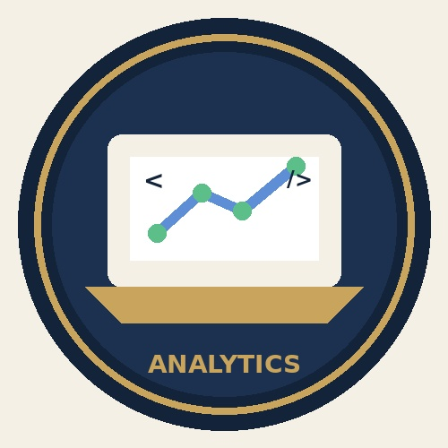
Completed the UNC–Chapel Hill Data Analytics Boot Camp and earned my Bachelor of Science in Health Systems Management from UNC Charlotte. This strengthened my ability to connect data, technology, healthcare administration, and real operational decision-making.
Pursuing my Master of Health Administration through Wake Forest University, with continued focus on healthcare strategy, information systems, population health, leadership, financial performance, and sustainable organizational growth.
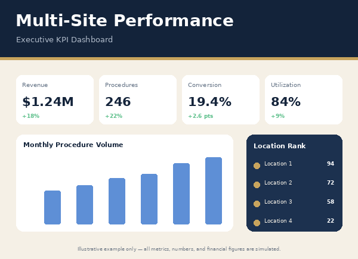
Built a consolidated reporting approach that gave leadership clearer visibility into leads, consultations, procedures, conversion rates, revenue, capacity, and location-level performance. I translated operational data from multiple sources into practical KPIs and recurring reports that helped identify performance gaps, guide staffing and growth decisions, and support expansion from approximately three procedures per week to more than twelve procedures per day.
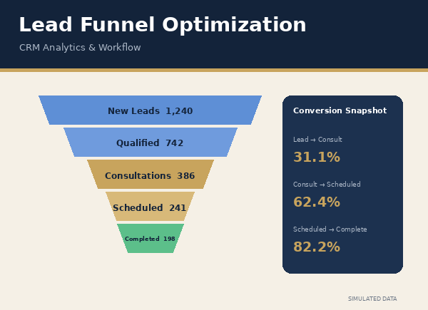
Redesigned lead-management workflows to improve follow-up consistency, pipeline visibility, and sales accountability. I established clear pipeline stages, daily reporting expectations, inactivity rules, reassignment standards, and performance measures for leads, consultations, and scheduled procedures. The new structure helped leadership identify stalled opportunities earlier, reduce neglected leads, and manage conversion performance more consistently.
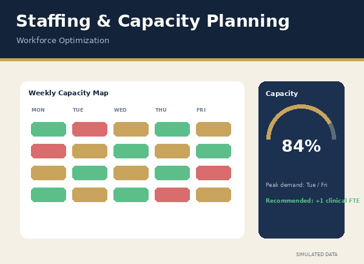
Evaluated procedure demand, provider availability, room capacity, staffing coverage, and scheduling patterns to better align resources with operational needs. I used volume trends and day-to-day performance information to identify bottlenecks, improve scheduling decisions, and support higher patient capacity without losing visibility into service quality or team workload.
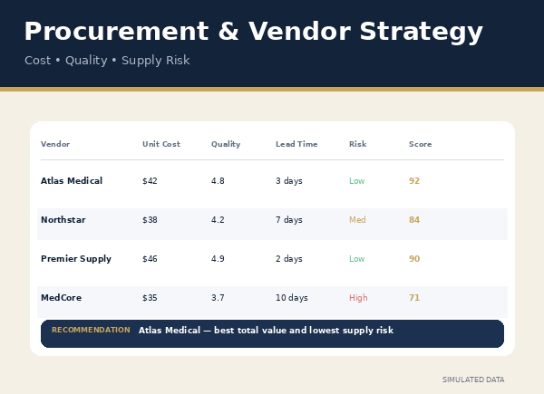
Developed a structured approach for comparing vendors, product pricing, quality, availability, and acceptable alternatives. I supported purchasing decisions through pricing analysis, vendor communication, negotiation, and supply-risk monitoring. This gave leadership a clearer basis for selecting products and suppliers while balancing cost, clinical requirements, operational reliability, and patient experience.
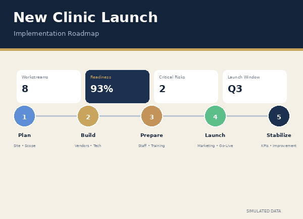
Coordinated the operational components required to launch and support growing clinic locations, including staffing, training, scheduling, technology, CRM workflows, vendors, patient financing, marketing readiness, and day-to-day procedures. I helped turn an evolving business model into repeatable operating processes that could be applied across multiple locations while accounting for local staffing and operational needs.
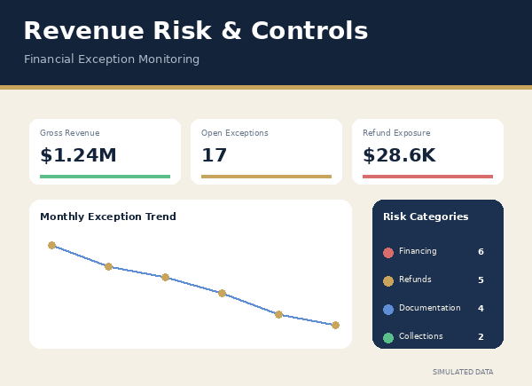
Created reporting and review processes around revenue performance, patient financing, cancellations, refunds, collections, and operational exceptions. I worked across operations, sales, vendors, and leadership to identify financial gaps, improve documentation, and provide earlier visibility into issues that could affect revenue, patient experience, or organizational risk.